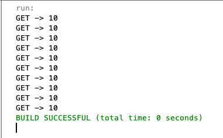
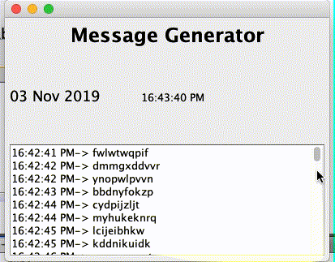

Dapat membuat Thread Pool menggunakan bahasa pemrograman Java
Menerapkan Thread Pool untuk kasus-kasus dalam pemrograman jaringan
Petunjuk
Awali setiap sebelum membuat projek dengan berdoa.
Baca dan pahami tujuan, dasar teori, dan latihan-latihan modul dengan baik.
Kerjakan tugas-tugas projek dengan baik, sabar dan jujur
Ulasan Teori
Thread Pool
Ketika kita membuat aplikasi concurrent di Java langkah yang dilakukan adalah dengan membuat beberapa objek Runnable
dan membuat sebuah Thread juga untuk menjalankannya. Sebenarnya untuk menciptakan sebuah thread di Java adalah hal
yang mahal karena akan memakan resource yang tersedia, ketika kita membuat sebuah thread aplikasi yang kita buat akan
mengalami penurunan performa yang signifikan.
Misalkan aplikasi server seperti database atau web server akan menerima request dari banyak client, hal tersebut
tentunya membutuhkan banyak pemprosesan tetapi membutuhkan waktu yang singkat. Hal yang dapat kita lakukan dari kasus
tersebut adalah dengan membangun aplikasi server yang membuat sebuah thread baru ketika ada request dari client. Hal
tersebut bisa dilakukan, tetapi tidak menguntungkan atau maksimal karena ketika sebuah server menciptakan thread setiap
kali request akan membutuhkan waktu lebih dan akan menggunakan resource system yang lebih juga. Selain itu, mematikan
thread juga tidak mudah.
Sebuah thread yang aktif akan menggunakan resource system, sebuah JVM ketika sedang membuat terlalu banyak thread dalam
waktu yang bersamaan dapat menimbulkan system out of memory sehingga aplikasi akan hang atau bahkan crash. Untuk
menanggulangi hal tersebut dibutuhkan limitasi jumlah thread yang akan dibuat dalam sebuah aplikasi.
Thread Pool akan menggunakan kembali thread sebelumnya yang telah diciptakan untuk menjalankan tugas saat ini,
hal ini menawarkan sebuah solusi untuk permasalahan di atas.
Beberapa istilah dari gambar di atas adalah sebagai berikut
Task Submitters, sebuah class biasa atau main thread yang berfungsi untuk memasukan antrian task atau tugas tertentu
ke dalam Task Queue.
Executor Service, bagian atau wadah yang di dalamnya sebuah Task Queue dan Thread Pool. Pada bagian ini disediakan
oleh Java pada paket java.util.concurrent
Task Queue, antrian task yang akan dikerjakan oleh thread
Thread Pool, kumpulan thread yang siap menjalankan task tertentu
Java menyediakan Executor Framework, yaitu sebuah interface pada java.util.concurrent.Executors yang menurunkan interface ExecutorService dan ThreadPoolExecutor
Methode Executor Thread Pool
newFixedThreadPool(int n), membuat thread pool dengan jumlah yang telah ditentukan. n adalah jumlah thread yang
akan dibuat.
newCachedThreadPool(), membuat thread pool dengan jumlah thread sesuai dengan kebutuhan. Ketika menjalankan task
akan menggunakan thread yang sebelumnya ketika tersedia.
newSingleThreadExecutor(), hanya membuat single thread.
Khusus untuk newCachedThreadPool() tidak disarankan ketika task yang dijalankan terlalu lama, hal tersebut akan
mengakibatkan system down karena terlalu banyak thread yang dibuat.
Langkah-langkah yang dapat dilakukan untuk menggunakan Thread Pool adalaha sebagai berikut
Buat sebuah task(objek Runnable) yang akan dieksekusi, kelas dengan yang mengimplement interface Runnable.
Buat sebuah Executor Pool menggunakan Executors, instance variabel boleh menggunakan ExecutorService atau
ThreadPoolExecutor. Ketika menggunakan ThreadPoolExecutor harus dilakukan casting seperti contoh di bawah ini
Merupakan sebuah interface yang digunakan untuk menjalankan task atau tugas dengan kebutuhan secara periode dan jeda
waktu tertentu setelah pendefinisian. Model thread yang dibuat mirip dengan ExecutorService, karena interface tersebut
merupakan turunannya. Contoh pendefinisiannya adalah sebagai berikut
Method yang umumnya dapat digunakan pada interface tersebut adalah di bawah ini
public <V> ScheduledFuture<V> schedule(Callable<V> callable, long delay, TimeUnit unit), digunakan untuk
menjadwalkan task atau tugas dengan delay waktu tertentu. Task yang akan dijalankan dapat memiliki nilai kembali ketika
task selesai dijalankan.
public ScheduledFuture<?> schedule(Runnable command, long delay, TimeUnit unit), digunakan untuk menjadwalkan task
dengan jeda atau delay tertentu. Task yang dijalankan tidak dapat mengembalikan nilai tertentu
public ScheduledFuture<?> scheduleAtFixedRate(Runnable command, long initialDelay, long period, TimeUnit unit),
digunakan untuk menjadwalkan task dengan initial awal jeda dan periode waktu tertentu.
public ScheduledFuture<?> scheduleWithFixedDelay(Runnable command, long initialDelay, long delay, TimeUnit unit),
Sama dengan yang sebelumnya, bedanya adalah delay sudah pasti dan tidak bisa ditawar.
Ketika menggunakan scheduleAtFixedRate masih ada toleransi ketika processor menjalankan task yang lama, artinya
thread akan menunggu sampai proses tersebut selesai. Sementara, scheduleWithFixedDelay kita harus bisa
mempertimbangkan execution time setiap task.
interface Future dan Callable
Ketika kita membuat sebuah task menggunakan interface Runnable, task tersebut tidak dapat mengembalikan nilai
kembalian ketika sudah selesai. Atau dengan kata lain ketika kita ingin memonitor task yang dijalankan, dapat
menggunakan interface Callable, interface tersebut terletak di java.util.concurrent.Callable.
interface Future digunakan untuk menampung nilai kembali dari interface Callable, nilai yang ditampung atau yang
dapat dilewatkan pada Callable tidak hanya variabel biasa tetapi bisa sebuah objek.
Library Guava
Selain menggunakan interface atau class bawaan Java, sebenarnya Google juga
menyediakan Library untuk urusan concurrent. Ketika menggunakan maven dapat ditambahkan tag di bawah ini pada file
pom.xml, untuk versi terbaru bisa juga mencari di
Maven Central.
Buatlah sebuah class, kemudian isikan methode main() menggunakan kode di bawah ini
ExecutorService executor = Executors.newSingleThreadExecutor();
for (int i = 0; i < 10; i++) {
Task t = new Task("Task " + i);
executor.execute(t);
}
executor.shutdown();
Silakan jalankan kode yang telah Anda buat, amati dan pelajari hasilnya!
Ubah kode ExecutorService executor = Executors.newSingleThreadExecutor() menjadi
ExecutorService executor = Executors.newFixedThreadPool(5)
Silakan jalankan kode yang telah Anda buat, bandingkan dengan yang sebelumnya apakah ada yang beda?
Pertanyaan
Apakah perbedaan fungsi Thread.sleep(int milisecond) dengan TimeUnit.SECONDS.sleep(long timeout)?
Ubah kode ExecutorService executor = Executors.newFixedThreadPool(5) menjadi
ExecutorService executor = Executors.newCachedThreadPool() apakah ada pengaruhnya dan jelaskan!
Apakah perbedaan kode ThreadPoolExecutor executor = (ThreadPoolExecutor) Executors.newFixedThreadPool(5)
dengan ExecutorService executor = Executors.newFixedThreadPool(5)
Buatlah instance variabel executor dari interface Executors dengan jumlah thread fix 5
Submit task dari object Task sebanyak 10 kali dan ambil nilai kembalinya.
Output yang diharapkan adalah sebagai berikut
Output
Pertanyaan
Silakan coba method public V get(long timeout, TimeUnit unit) untuk mendapatkan nilai kembalian dari objek
Callable. Perbedaannya apa dengan get(), tanpa parameter?
Ubah kode pada method call() kelas Tist, menjadi kode untuk menghitung nilai total dari 5 buah nilai, silakan
menggunakan perulangan untuk menghitungnya. Setelah diubah, lewatkan objek Tist sebanyak 10 kali sehingga outputnya
seperti di bawah ini

Output
Tugas
Buatlah program dengan fungsi dan tampilan seperti di bawah ini

Tugas
Kebutuhan program di atas adalah
Dibuat menggunakan konsep thread pool
Tampilan untuk clock menggunakan thread pool dengan jumlah thread 10 , bukan schedulling
Tampilan untuk message generator menggunakan scheduling
Silakan kerjakan praktikum terlebih dahulu agar memahami konsep thread pool